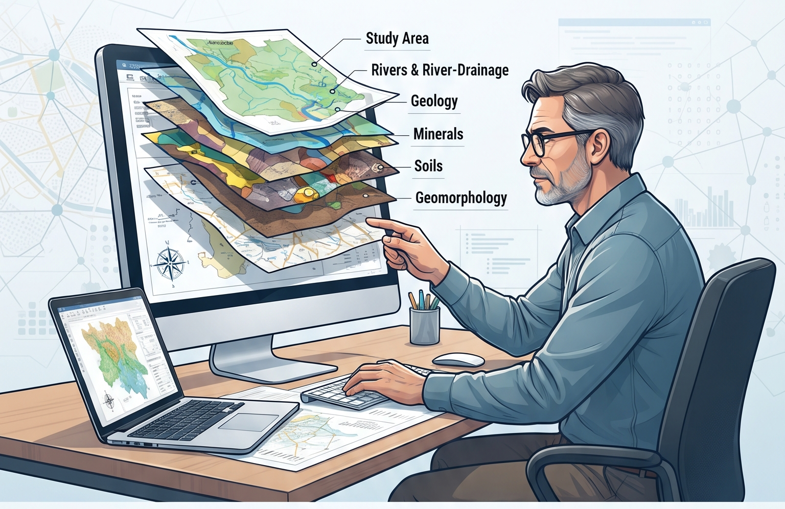
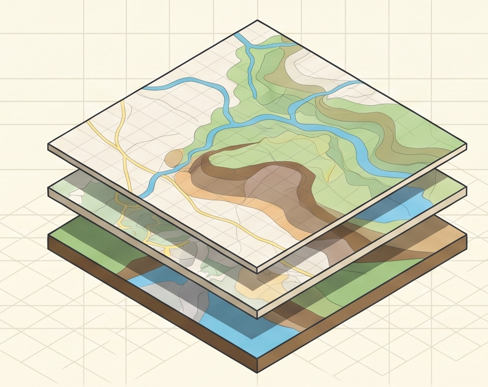

⌖
Study area maps
Build a clear geographic foundation for fieldwork, reports, presentations and publications.
↗Custom spatial intelligence
Purpose-built GIS mapping and spatial analysis for projects that need more than a standard map.
Made for researchers, teachers
and curious minds.

What we map
Specialized multi-layered maps designed around your question, your study area and your research goals.
Build a clear geographic foundation for fieldwork, reports, presentations and publications.
↗Reveal the networks, watersheds and terrain relationships shaping your landscape.
↗Map geology, minerals, soils and geomorphology as connected layers of one story.
↗
Built around your work
Whether you are developing a PhD, preparing a lecture or investigating the past, a thoughtful map can make complex information easier to understand and act on.
Have a project in mind?
Share your study area and requirements. We’ll shape the right spatial view for your project.
Email your enquiry ↗